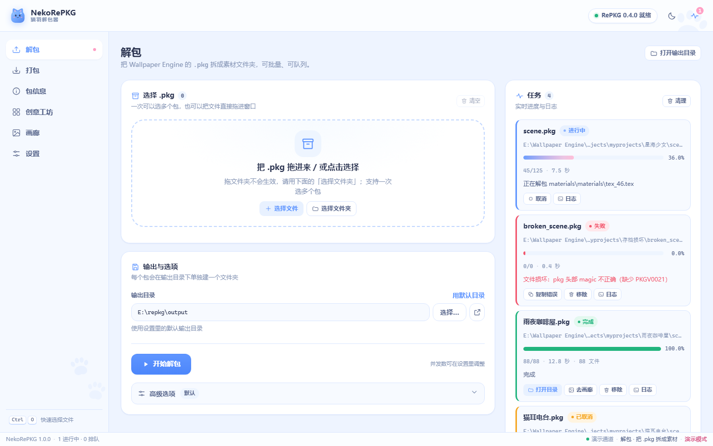

拖入即解包
拖进窗口或点选，支持一次多个 .pkg 和整个文件夹。仅提取 / 忽略扩展名、单目录、递归、复制 project.json、用作品名命名、覆盖开关一应俱全。
NekoRePKG 是 RePKG 的图形界面版：解包 Wallpaper Engine 的 .pkg、浏览素材与贴图、把改好的文件夹重新打包成 .pkg，还能自动扫描创意工坊批量处理。全程点鼠标，不用记一条命令。

FEATURES
拖进窗口或点选，支持一次多个 .pkg 和整个文件夹。仅提取 / 忽略扩展名、单目录、递归、复制 project.json、用作品名命名、覆盖开关一应俱全。
秒读包结构：条目表可搜索、排序、按扩展名筛选，附体积统计、封面与 project.json 详情。几万个条目也只读头部，不碰数据区。
RePKG 只解不封。这里自带原生 pkg 写入器：选文件夹 → 输出 .pkg → 自动用 RePKG 回读校验条目数与字节数，改完的壁纸能直接放回去。
自动找 Steam 库里的 Wallpaper Engine 工坊目录，封面墙浏览、搜索筛选、多选后一键批量解包；本机实测 83 个作品、2.6 GB 一次扫完。
缩略图墙 + 灯箱大图：滚轮缩放、左右切换、一键打开原图或所在目录。不用再去文件夹里翻半天找贴图。
多任务并行（1–4 并发可调），进度、阶段、耗时一目了然；日志实时滚动，随时取消，完成后一键开目录。
默认蓝色猫娘萌系风，设置里一键切到冷静深色工作台；选择会记住，换主题立刻生效。
全程不联网、不带遥测；exe 带 Authenticode 签名与可信时间戳，设置里可自定义 RePKG.exe 路径。
SCREENSHOTS
所有截图都是软件真实界面（演示数据）。点按钮切换页面。
QUICK START
下载 NekoRePKG.exe 放到任意目录双击。首次运行若提示「未知发布者」，点「更多信息 → 仍要运行」。
或者去「创意工坊」页自动扫描本机壁纸，勾选后批量解包。选好输出目录，点「开始解包」。
在「画廊」看贴图，改好素材后用「打包」页回封成 .pkg；工具会自动用 RePKG 回读校验。
小提示：文件夹拖进窗口是拿不到路径的（浏览器/WebView2 的限制），选文件夹请用界面上的「选择文件夹」按钮喵。
SPECS
当前稳定版 v1.0.1，源码 MIT 开源，内核致谢 RePKG。
v1.0.1 更新：打包页新增「排除转换出的 PNG」，回封时自动跳过由 .tex 转换出的图片（原始 .tex 保留），包更干净。
| 版本 | v1.0.1 （2026-10-27） |
|---|---|
| 平台 | Windows 10 / 11 · x64 |
| 体积 | 21.4 MB（单文件） / 文件夹版 zip 约 21 MB |
| 运行库 | 无 — 自带 Python 运行时，内置 RePKG 0.4.0 |
| 解包内核 | RePKG 0.4.0 © NotScuffed（MIT）· github.com/NotScuffed/RePKG |
| 签名 | CN=猫羽雫 · SHA-256 · DigiCert 时间戳 |
| SHA-256 | FCB8083653A6201B8CDD2969168994F231D94CEE5979615391E76BAE63F71DD9
|
| 许可 | MIT |
FAQ
exe 用的是自签名证书（CN=猫羽雫），密码学上有效，但只有装了这张根证书的机器才显示「已验证」，SmartScreen 也要看下载信誉。第一次运行点「更多信息 → 仍要运行」即可。
把根证书 ca\root.cer 导入「受信任的根证书颁发机构」，把签名证书 code-signing\leaf.cer 导入「受信任的发布者」。证书文件在签名工具的 pki\profiles\demo\ 下；不导入也不影响功能。
现在不行。png → tex 需要完整的纹理编码与 mipmap 链，本工具暂未做；回封时你可以直接替换素材文件、改 scene.json 等，但请保留原始 .tex（解包时它会原样保留一份）。
可以替换到工坊作品的目录里（例如把改好的 scene.pkg 覆盖回去），但 Wallpaper Engine 订阅更新时可能被覆盖，改动前记得备份。回封结果会自动回读校验条目与字节数。
不会——只读取原包。解包默认不覆盖已有文件，只有勾选「覆盖已存在」才会覆盖输出目录里的同名文件。
pkg 格式单条目上限 2 GB；常见壁纸包从几 MB 到几百 MB 都能处理。包信息页只读头部，大包也是秒开。
没有单独提供，但界面上所有选项都对应 RePKG 的原生参数，想脚本化可以直接调用 resources\RePKG.exe。图形界面本身就是它的完整封装。
不需要。RePKG 0.4.0（作者 NotScuffed，MIT）已经内置在下载包里：单文件版运行时解压到临时目录，文件夹版在 resources\RePKG.exe。设置页还能看到它的版本与路径，也可以换成你自己编译的版本。
用国内的 GitCode 镜像：gcw_YiSvwnI0/NekoRePKG，同样提供 exe 与 zip，国内下载通常几秒到十几秒。两个仓库内容一致，SHA-256 也相同。
解包内核 RePKG © NotScuffed（MIT）；本工具代码 MIT。请只解包/修改你拥有授权的壁纸，尊重原作者与创意工坊的使用条款，不要二次售卖或商用他人素材。